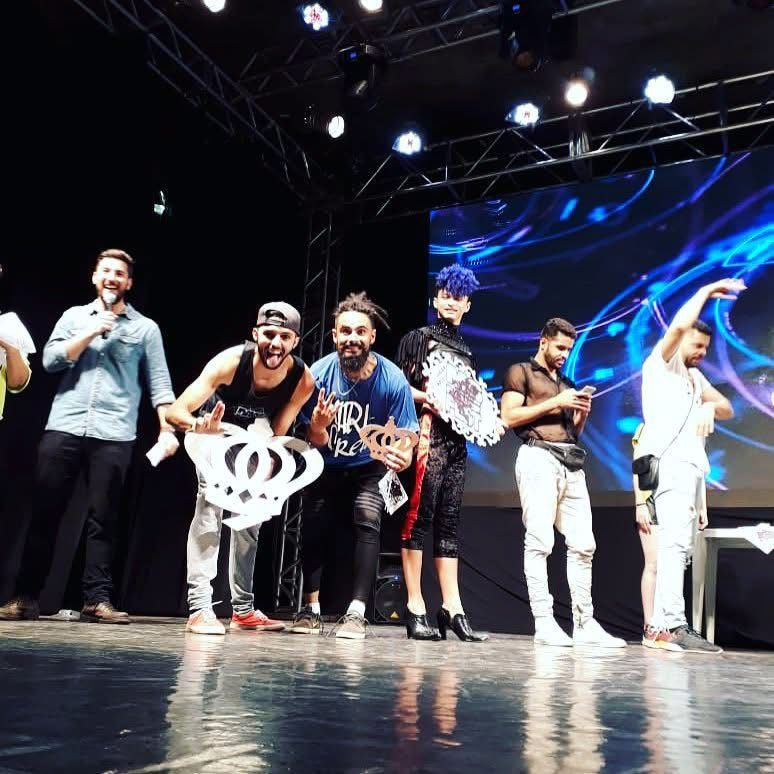
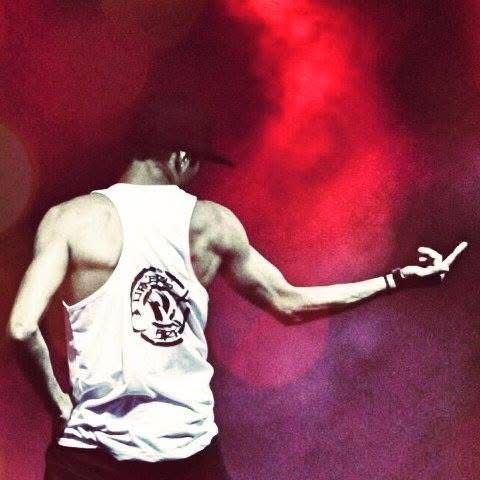

Dançarino e coreógrafo de Danças Urbanas com mais de 19 anos de carreira. Bem-vindo ao meu portfolio de performances, espetáculos, workshops e criações cênicas.


Me chamo Patrick Fernando, natural do Mato Grosso do Sul. Iniciei minha caminhada na dança em 2005 pelo projeto social "Arte sim, violência não" da prefeitura de Campo Grande — um marco que transformou a minha perspectiva de vida.
Representei por 3 anos o Grupo Oficina do Ritmo, coreografado por Marcelo Barreto. Em seguida, após seleção concorrida por audição, fui selecionado para o Grupo Street Pop, grupo base do conceituado estúdio Funk-se dirigido pelo coreógrafo Edson Clair — referência fundamental responsável por fomentar e consolidar a cultura do Street Dance no estado.
"Com mais de 19 anos de experiência, acredito genuinamente que a dança muda a vida das pessoas e nos traz mais forças para seguir em frente."— Patrick Fernando (Pat)
Após estagiar com dedicação no grupo principal, fui admitido oficialmente no corpo de dançarinos da companhia Funk-se, representando o estado em turnês e mostras por todo o Brasil. Ao longo de mais de 6 anos com a companhia, coreografei também o Street Pop e levei trabalhos ao FIH2, até consolidar minha carreira Solo como pioneiro a performar solo no MS Street Dance Fest.
Uma história construída com consistência, disciplina e momentos pioneiros na cena de Danças Urbanas.
Início da trajetória artística no projeto "Arte sim, violência não" da prefeitura de Campo Grande - MS, onde desenvolveu os primeiros fundamentos corporais e rítmicos.
Durante 3 anos integrou o corpo de dançarinos sob a direção coreográfica de Marcelo Barreto, amadurecendo a dinâmica de palco e trabalho de equipe.
Aprovado em audição para o Street Pop do estúdio Funk-se, sob orientação do mestre Edson Clair. Após 3 anos de destaque, foi convidado a estagiar no grupo principal da companhia.
Admitido oficialmente no corpo de dançarinos principal do Funk-se, representando o estado em festivais, mostras e turnês de espetáculos teatrais.
Coreógrafo do Street Pop por 4 anos, levando coreografias por 3 anos consecutivos ao FIH2 (Festival Internacional de Hip Hop de Curitiba) e bicampeão no Festival Vale das Ruas de Nova Andradina.
Primeiro dançarino a performar solo na história do MS Street Dance Fest, sendo premiado em todas as edições. Atua como dançarino profissional, ministrando masterclasses e workshops pelo país.
Grandes produções cênicas e festivais de prestígio nacional e internacional que marcaram época.
Espetáculo de grande impacto teatral da Cia Funk-se conectando o vigor das danças de rua a questionamentos humanos e sociais.
Montagem comemorativa com coreografias dinâmicas e forte apelo estético celebrando a trajetória da dança urbana no MS.
Investigação rítmica profunda aliando a ancestralidade e matrizes afro ao vocabulário contemporâneo do hip hop.
Composição plural com linguagens cênicas e estilos urbanos combinados em harmonia de luzes, sombras e corpos em movimento.
Festival Internacional de Hip Hop dirigido por Octavio Nassur. Pat levou suas coreografias autorais durante 3 anos consecutivos para o maior evento da América Latina.
Festival de Nova Andradina produzido por Fernando Gomes. Conquistou a primeira colocação em duas edições consecutivas com trabalhos coreográficos memoráveis.
Primeiro bailarino da história a competir solo no festival, consolidando e legitimando a categoria no MS, com premiações em todas as edições em que participou.
Ministrante de workshops no estúdio Funk-se e em eventos sazonais, capacitando dançarinos e difundindo a cultura urbana com rigor técnico e didática.
Aperfeiçoamento constante com referências consagradas no Brasil e no cenário internacional da dança.
Registros fotográficos em alta definição de apresentações, mostras, aulas e ensaios artísticos.
Disponível para contratações em eventos, workshops, montagens de espetáculos e aulas em todo o Brasil.
Aulas intensivas para escolas, estúdios e academias. Foco em fundamentos de Hip Hop e Danças Urbanas, controle corporal, peso e musicalidade.
Criação e direção coreográfica completa para companhias e grupos competidores em grandes festivais como FIH2, mostras e festivais de dança.
Apresentações exclusivas para festivais, convenções, lançamentos de marcas, peças teatrais, videoclipes e intervenções artísticas de alto impacto.
Selecione o tipo de projeto, cidade e data prevista para gerar instantaneamente uma mensagem personalizada e falar diretamente comigo no WhatsApp.
Caso tenha interesse em conhecer meu trabalho, agendar um workshop ou fechar uma apresentação, utilize os canais abaixo.
Preencha os campos para iniciar uma conversa diretamente comigo.